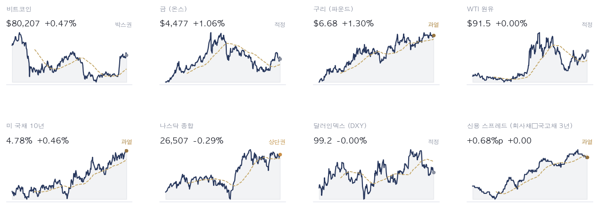
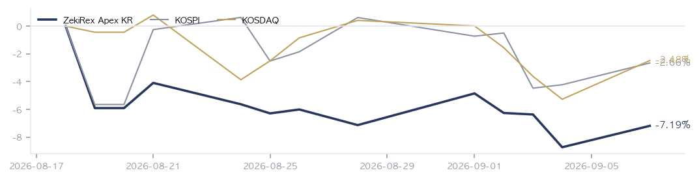

|
ZekiRex™ Apex KR — 2026년 9월 7일
오늘의 판단 · 1/2
데이터 기준 9/4 (KST) 종가 · 간밤 뉴욕 9/6 종가(현지시간) |
ZekiRex™ |
|
|
|
THE REX CALL
금요일 서울이 오른 뒤에 미국 고용 지표가 나왔고, 9/7 뉴욕이 쉬어 그 숫자를 서울이 혼자 반영합니다.
매수도 매도도 하지 않았습니다. 통과한 13개 가운데 둘은 이미 보유해, 여덟은 네 자리가 차서 넘겼고, 셋은 품질 하한에서 걸렀습니다.
오늘 반드시 알아야 할 것
1. 9/4 서울 종가에서 코스피는 1.64% 올라 6,687, 코스닥은 2.95% 올라 814로 닫혔습니다. 이틀 동안 밀린 폭을 하루에 되돌린 반등입니다. 2. 같은 9/4 뉴욕 마감(현지시간)은 반대 방향이었습니다. S&P 500이 0.38%, 나스닥 종합이 0.29% 내렸고 미 국채 10년물은 4.78%로 올라섰습니다. 3. 미국 8월 비농업 취업자가 16만2천명으로 집계돼 예상 5만5천명을 크게 넘었습니다. 이 숫자는 서울이 닫힌 뒤에 나왔으므로 금요일 서울 값에는 들어 있지 않습니다. 4. 9/4 서울 안에서 방향이 갈렸습니다. 지수가 오르는 동안 현대해상은 4.49%, 신한지주는 3.67% 내렸습니다. 금리를 올리는 쪽 지표는 보험과 은행에 반대로 작용합니다. 5. 주말에 두 가지가 더해졌습니다. 산유국 협의체가 10월 쿼터를 동결했고, 중국이 국유 은행과 보험사에 540억달러를 넣기로 했습니다. 둘 다 금요일 종가에는 담기지 않았습니다.
| |
|
최근 10거래일 국면 추이 (왼쪽이 과거) 방향 — 어디까지 왔나. 이 신호등은 일곱 가지 조건을 세어 정합니다. 코스피는 다섯을 통과해 둘이 모자랍니다 — 50일선 위로 올라서지 못했고, 52주 고점에서 25% 안에 들어오지도 못했습니다. 긴 흐름을 재는 세 조건은 모두 살아 있습니다. 코스닥은 둘만 통과했습니다. 9/4에 2.95% 올랐지만 200일선 아래에 있고 그 선은 아직 내려가는 방향입니다. 올라가는 판정은 사흘 연속을 요구하고, 내려가는 판정은 그날 바로 적용합니다. 늦게 들어가면 기회를 잃고 늦게 나오면 원금을 잃기 때문입니다.
| |
| 오늘의 조치 | | 오늘 신규 매매 없음. 규칙이 요구하지 않는 날에 거래하지 않는 것도 하나의 결정입니다. |
|
| 종목 | 비중 | 평가금액 | 평가손익 | 현재가 | 손절가 | 여유 | 보유일 | 다음 이벤트 | | 타이거일렉 | 24% | ₩219,674,800 | −₩14,184,300 | ₩60,400 | ₩59,156 | +2.1% | 13일 | — | | 한국콜마 | 22% | ₩206,598,600 | +₩0 | ₩145,800 | ₩134,136 | +8.7% | 9일 | — | | 샘씨엔에스 | 27% | ₩250,196,560 | +₩14,286,480 | ₩13,660 | ₩11,850 | +15.3% | 13일 | — | | GS | 27% | ₩251,517,000 | +₩15,631,000 | ₩123,900 | ₩106,904 | +15.9% | 13일 | — | | 현금 | — | ₩118,160 | 아직 투자하지 않은 돈입니다 |
계좌 요약 | 시작 자본 | ₩1,000,000,000 | 2026-08-18 설정 | | 실현 손익 | −₩87,628,060 | 판 종목에서 확정된 금액 | | 평가 손익 | +₩15,733,180 | 들고 있는 종목의 장부상 손익 | | 현재 평가액 | ₩928,105,120 | 시작 대비 −7.19% | | 최고 평가액 | ₩1,000,000,000 | 지금은 고점 대비 −7.19% |
시작 자본에 실현 손익과 평가 손익을 더하면 현재 평가액이 됩니다. |
| 관문을 통과한 종목 — 자리가 없어 담지 못한 이름들 | | 금융 4 | | 001450 현대해상 | RS 92 | ₩51,100 | | 055550 신한지주 | RS 82 | ₩110,300 | | 086790 하나금융지주 | RS 82 | ₩134,300 | | 105560 KB금융 | RS 81 | ₩172,000 | | 소비 3 | | 192820 코스맥스 | RS 92 | ₩275,500 | | 278470 에이피알 | RS 91 | ₩394,000 | | 073240 금호타이어 | RS 87 | ₩7,180 | | 산업재·인프라 2 | | 317400 자이에스앤디 | RS 98 | ₩11,230 | | 028670 팬오션 | RS 80 | ₩5,960 | | 반도체·하드웨어 1 | | 119850 지엔씨에너지 | RS 94 | ₩44,900 | | 기타 1 | | 089860 롯데렌탈 | RS 89 | ₩50,900 |
| 왜 못 담았나. 자리는 넷뿐이고 각 자리에 총자산 25%가 들어갑니다 — 한 종목이 −8%에 걸려도 계좌 전체로는 2% 손실이 되도록 맞춘 구조입니다. 자리를 비우는 길은 손절과 오실레이터 이탈 둘뿐이라, 더 좋은 후보가 나와도 갈아타지 않습니다.
이 목록이 뜻하는 것. 13개가 조건을 통과했고 그중 보유 중인 종목을 뺀 11개가 대기 중입니다. RS는 80~98입니다. 우리 4자리는 반도체·하드웨어 2, 에너지·정유 1, 소비 1로 나뉘어 있고 가장 큰 쪽이 반도체·하드웨어입니다 — 그래서 하루 등락이 지수와 평균 2.0%p 벌어졌고, 가장 크게 갈린 8/28 세션에는 코스피 보다 3.6%p 더 내렸습니다. 자리가 하나 열리면 이 순서의 맨 위부터 검토합니다. 매수 추천이 아닙니다. |
조건은 통과했지만 품질 하한에서 걸린 종목 | 에이피알 278470 — 품질 하한 미달 | | 롯데렌탈 089860 — 재무 등급 SMR E — 품질 하한 미달 | | 금호타이어 073240 — 품질 하한 미달 |
|
| 핵심 지표 | 코스피 6,687 +1.64% · 고점 −26.6% 1.64% 올라 6,687입니다. 일곱 조건 가운데 다섯을 통과했고 긴 흐름은 아직 무너지지 않았습니다. 50일선 위로는 올라서지 못했습니다. 박스권 | 코스닥 814 +2.95% · 고점 −33.7% 2.95% 올라 814입니다. 오름폭은 코스피보다 큽니다. 그러나 일곱 조건 가운데 둘만 통과해 긴 흐름은 무너진 상태입니다. 하루 반등과 구조는 다릅니다. 하단권 | 원/달러 ₩1,349.50 0.66% 내려 1,349.50원입니다. 원화가 강해지면 수입 원가는 내려가고 수출 대금의 원화 환산액도 함께 줄어듭니다. 과매도 | 국고채 3년 3.88% 3.88%로 움직이지 않았습니다. 회사채 3년물 4.56%와의 차이는 0.68%p입니다. 국내 자금 사정은 아직 조여지지 않았습니다. 과열 | S&P 500 7,719 신고가권 | 포트폴리오 -7.19% 현금 0% · 보유 4종목 설정 이후 −7.19%이고 코스피는 −2.66%입니다. 격차 4.53%p는 하루 전과 같습니다. 네 자리가 모두 차 있어 이번 판에서 바꿀 수 있는 것이 없었습니다. 설정 이후 |
|
| 한 줄 정리: 금요일 서울은 올랐고, 그 상승은 미국 고용 지표를 보기 전에 만들어졌습니다. 코스피는 1.64% 올라 6,687, 코스닥은 2.95% 올라 814로 닫혔습니다. 같은 날 뉴욕 마감은 반대였습니다. 8월 비농업 취업자가 16만2천명으로 예상 5만5천명을 크게 넘었고, 미 국채 10년물은 4.78%로 올라섰습니다. 순서가 중요합니다. 서울이 먼저 닫혔고 숫자가 나중에 나왔습니다. 9/7 뉴욕이 노동절로 쉬기 때문에, 그 숫자를 값에 넣는 큰 시장은 월요일 서울 하나입니다. |
|
|
|
판단의 근거 · 2/2
데이터 기준 9/4 (KST) 종가 · 간밤 뉴욕 9/6 종가(현지시간) |
ZekiRex™ |
|
|
| 오늘 반드시 알아야 할 것 |
|
서울은 금요일에 올랐고, 그 상승을 흔들 숫자는 서울이 닫힌 뒤에 나왔습니다
9/4 서울에서 코스피가 1.64%, 코스닥이 2.95% 올랐습니다. 같은 날 뉴욕 마감(현지시간)에서는 S&P 500이 0.38% 내렸고 미 국채 10년물이 4.78%로 올라섰습니다. 두 방향을 가른 것은 미국 8월 고용 16만2천명이며, 예상 5만5천명의 세 배입니다. 서울은 그 발표 전에 닫혔습니다. 9/7 뉴욕이 노동절로 쉬므로 이 숫자를 처음 값에 넣는 큰 시장은 월요일 서울입니다. 왜 그런가. 어긋나는 자리는 금융업입니다. 금리가 오르는 쪽 지표는 보통 은행과 보험의 이익 전망을 밝게 합니다. 그런데 9/4 서울에서는 현대해상이 4.49%, 신한지주가 3.67%, 하나금융지주가 3.73% 내렸습니다. 업종 순위에서도 손해보험이 다섯 계단, 은행이 네 계단 내려갔습니다. 서울이 금리 상승분을 아직 받지 않았다는 뜻이거나, 이미 오른 값을 정리한 것입니다. 다음에 무엇이. 다음에 볼 것은 9/7 서울에서 은행과 보험이 되돌아오는지입니다. 되돌아오면 금요일 하락은 금리를 아직 반영하지 않은 것이고, 그대로면 이미 오른 값을 정리한 것입니다.
보도 대 우리 데이터 | Maeil Business 10년물이 꺾이는 시점이 반도체 매수 신호 → 저희 계산은 이 해석을 받쳐 주지 않습니다. 616종목 가운데 저희 기준을 넘은 13개에 대형 반도체주는 없고, 반도체 관련은 부품사 샘씨엔에스 한 곳뿐입니다. | | Edaily 9월 연방준비제도 동결 전망, 고용 서프라이즈만으로는 인상 근거 부족 → 9/4에 미 국채 10년물은 4.78%로 올랐고 2년물은 4.20%였습니다. 채권시장은 아직 이 견해와 반대쪽에 서 있습니다. | | Investor's Business Daily 국채 발행과 재정 부담이 금리를 밀어 올린다 → 미 국채 30년물은 5.25%이고 2년물은 4.20%입니다. 긴 쪽이 더 높은 모양은 이 해석과 어긋나지 않습니다. |
그래서 우리는: 은행이나 보험 종목을 들고 계신 독자라면 월요일 하루를 그 검증에 쓸 수 있습니다. 금요일 하락이 금리를 아직 반영하지 않은 것이라면 월요일에 되돌아옵니다. 이익 실현이었다면 지표가 나와도 돌아오지 않습니다. 다만 확인해 줄 뉴욕 정규장이 그날 밤에 없다는 점은 함께 보셔야 합니다. 방향이 맞아도 하루를 더 기다려야 하고, 틀려도 그날 안에 고쳐 줄 장이 없습니다.
Rex Lens™
| |
| 그 밖에 알아야 할 것 | | 캐나다 보복관세 9월 8일 발효 · 캐나다 정부가 9월 8일부터 276억 캐나다달러 규모 미국산 수입품에 보복관세를 물립니다. 트럼프 대통령은 9월 6일 두 나라 통화 가치의 불균형을 더는 용납할 수 없다고 적었다고 연합뉴스가 전했습니다. (Yonhap KR · Bloomberg · CBC News) → 무역 분쟁이 상품에서 통화로 넓어질 수 있다는 신호입니다. 환율까지 협상 대상이 되면 대미 수출 비중이 큰 한국 제조업의 원가 계산이 관세만 볼 때보다 한 겹 복잡해집니다. | | 미국 8월 생산자·소비자물가 9월 10~11일 발표 · 미국 8월 소비자물가는 9월 11일 동부시간 오전 8시 30분에 나오고, 생산자물가는 그 전날 발표됩니다. 연준이 9월 15~16일 회의에서 보게 될 마지막 물가 자료라고 CNBC가 전했습니다. (CNBC · Investor's Business Daily · Wall Street Journal) → 금요일 고용지표가 만든 인상 쪽 무게를 굳히거나 되돌릴 유일한 재료입니다. 우리 진입 규칙은 지표 자체를 보지 않으므로, 여기서 달라지는 것은 후보의 수가 아니라 후보가 놓인 환경입니다. | | 한국 선물·옵션 동시만기 9월 10일 · 지수와 개별 종목의 선물·옵션 만기가 겹치는 날이 9월 10일이며, 미국은 9월 18일입니다. 머니투데이는 만기와 미국 물가 발표가 같은 주에 놓여 변동성이 커질 수 있다고 짚었습니다. (Money Today · Edaily) → 만기 수급은 하루짜리 흔들림이지 추세가 아닙니다. 그날 종가만으로 방향을 읽으면 만기 물량을 추세로 오독하게 되며, 이번에는 미국 물가 발표가 같은 주에 겹쳐 두 원인이 섞입니다. | | 한국은행 9월 16일 결정, 연준은 현지 같은 날 · 한국은행 금융통화위원회가 9월 16일 기준금리를 정하고 연준 회의는 9월 15~16일에 열립니다. 시차 때문에 서울이 워싱턴보다 먼저 결정하며, 신임 총재는 신중한 기조를 예고했다고 케이이디글로벌이 전했습니다. (KED Global · Edaily) → 서울이 먼저 움직여야 하는 구조여서 환율 부담이 한쪽으로 쏠립니다. 우리 한국 후보 열세 곳 가운데 은행과 보험이 넷이라, 이 결정의 결과가 후보 구성에 곧바로 닿습니다. | | 중앙은행 금 이전과 연말 금 전망 · 네덜란드 중앙은행이 3~8월에 금 86톤을 뉴욕과 오타와에서 런던으로 옮겼다고 블룸버그가 전했습니다. 골드만삭스는 연말 온스당 4,900달러를 전망했고, 독일은 뉴욕에 둔 1,236톤의 반환 압박을 받고 있습니다. (Bloomberg · MarketWatch · Financial Times) → 보관 장소를 옮기는 것은 가격 전망이 아니라 신뢰에 관한 판단입니다. 한 해 사이 뉴욕 연준에 금을 두는 중앙은행 비중이 17%에서 14%로 낮아졌다고 세계금협회가 집계했습니다. |
| 한국과 미국을 잇는 것: 연결 고리가 이번에는 거꾸로 섭니다. 보통은 뉴욕이 먼저 값을 매기고 서울이 다음 날 아침에 받습니다. 9/7에는 뉴욕이 쉬므로 서울이 먼저 매기고, 뉴욕은 9/8 새벽(KST)에야 그 값을 확인합니다. 서울의 월요일 값이 그대로 미국 개장의 출발점이 된다는 뜻입니다. |
 Rex Pulse™ — 지수·가상자산 / 통화 / 원자재 / 채권 16종, 1년 추이와 50일 이동평균(점선) · 기준 한국 9/4 종가, 뉴욕 9/6 종가(현지시간) |
저희가 시장에 매기는 신호등은 노란불이고, 코스피는 노랑, 코스닥은 빨강입니다. 코스피는 일곱 조건 가운데 다섯을, 코스닥은 둘을 통과했습니다. 이 신호등은 매수를 막지 않습니다. 위험은 종목마다 −8% 손절선과 한 자리 25% 상한으로만 관리합니다. 신호등이 어떤 색이든 한 종목에서 잃을 수 있는 폭을 정하는 것은 그 손절선이라는 뜻입니다. 이번 판에 매매가 없었던 것도 신호등 때문이 아니라 네 자리가 모두 차 있기 때문이며, 자리가 비는 것은 손절이 걸리거나 추세가 꺾일 때뿐입니다. |
| 리더십 — 업종 강세 순위 | 강세 상위 | 업종 | 강도 / 자금 | 차이 | | 01 | 석유와가스 | | +42 | | 02 | 반도체와반도체장비 | | +32 | | 03 | IT서비스 +8 | | +22 | | 04 | 전기장비 +1 | | +30 | | 05 | 전자장비와기기 -1 | | +38 | | 06 | 손해보험 -5 | | -17 |
| 약세 하위 | 업종 | 강도 / 자금 | 차이 | | 01 | 생물공학 | | -18 | | 02 | 조선 | | -30 | | 03 | 호텔,레스토랑,레저 | | -55 | | 04 | 건강관리장비와용품 -7 | | -13 | | 05 | 전기제품 +2 | | -41 |
|
| | 업종을 9/4 서울 종가 기준 강세 순으로 세운 뒤 위 다섯과 아래 다섯을 실었고, 본문이 지목했거나 보유 중인 업종을 더했습니다. 위쪽은 석유와가스, 생명보험, 반도체와반도체장비, IT서비스, 항공사 차례입니다. 1위 석유와가스의 평균 상대강도는 90.0이고 2위 생명보험은 87.0입니다. 아래쪽 다섯은 모두 건강관리 계열입니다. 강세와 약세가 종목이 아니라 업종 단위로 갈려 있다는 뜻입니다. 저희가 볼 것은 이 갈림이 유지되는지이며, 무너지면 통과 명단의 성격도 함께 바뀝니다. |
| Rex 25™ — 당일 등락률 전체 순위 | | 01 119850 지엔씨에너지+7.29% | | 02 ● 252990 샘씨엔에스+4.75% | | 03 ● 078930 GS+4.21% | | 04 089860 롯데렌탈+0.99% | | 05 073240 금호타이어+0.84% | | 06 028670 팬오션+0.34% | | 07 317400 자이에스앤디-0.09% | | 08 192820 코스맥스-2.30% | | 09 278470 에이피알-2.96% | | 10 105560 KB금융-3.32% | | 11 055550 신한지주-3.67% | | 12 086790 하나금융지주-3.73% | | 13 001450 현대해상-4.49% |
| 616종목 가운데 13개가 저희 기준을 넘었고, 하루 전과 같은 수입니다. 수가 같아도 안은 갈립니다. 은행과 보험이 넷인데 9/4에 넷 다 3% 넘게 내렸습니다. 반대로 샘씨엔에스가 4.75%, GS가 4.21% 올랐습니다. 같은 명단 안에서 금리에 걸린 쪽과 유가에 걸린 쪽이 반대로 움직였다는 뜻입니다. 셋은 품질 하한에서 걸렀습니다. 에이피알과 금호타이어는 종합 점수가 70에 못 미쳤고, 롯데렌탈은 재무 등급 E에 종합 점수 53이 겹쳤습니다. 저희가 볼 것은 금리가 오르는 쪽으로 굳을 때 그 넷이 되돌아오는지입니다. | | 13종목뿐입니다. 25자리 가운데 오늘 조건을 만족한 것이 13개라는 뜻이고, 빈자리는 채우지 않습니다. ● 표시가 우리 보유 종목입니다. 순서는 등락률만 따릅니다 — 하락 상위에 보유 종목이 있어도 그 자체가 매도 신호는 아닙니다. 매도는 −8% 손절과 오실레이터 이탈, 둘뿐입니다. |
| 보유 비중 — 하한 8% / 진입 25% | | GS 07893027.1% | | 샘씨엔에스 25299027.0% | | 타이거일렉 21913023.7% | | 한국콜마 16189022.3% |
25%는 진입 시점의 크기이지 보유 한도가 아닙니다. 오른 종목을 크다는 이유로 줄이지 않습니다. |
| Rex Radar™ — 앞으로의 일정 | | 이번 주의 핵심 — 이번 주에 가장 무거운 일정은 9/11 21:30 KST에 나오는 미국 8월 소비자물가입니다. 9월 15~16일 회의 직전의 마지막 물가 자료여서, 금요일 고용이 만든 금리 방향을 굳히거나 되돌립니다. | | 9/7 (월) | 뉴욕 노동절 휴장, 서울 정규장은 정상 개장핵심 서울이 미국 고용 지표를 혼자 값에 넣습니다. 볼 숫자: 손해보험과 은행이 업종 순위 9위와 12위에서 올라오는지 봅니다. | | 9/11 (금) 21:30 KST | 미국 8월 소비자물가 (9/11 08:30 ET, 현지시간)핵심 9월 15~16일 회의 직전의 마지막 물가 자료입니다. 볼 숫자: 미 국채 10년물 4.78%가 더 올라가는지 봅니다. |
|
|
 설정 이후 누적 수익률입니다. 계좌 −7.19%, 코스피 −2.66%, 코스닥 −2.48%로 두 지수보다 아래에 있습니다. 하루 전에는 계좌 −8.73%, 코스피 −4.23%였습니다. 셋이 함께 올라왔고 순서는 그대로입니다. 그림이 보여 주는 것은 수준이 아니라 간격입니다. 계좌와 코스피 사이의 4.53%p가 8월 하순부터 거의 같은 폭으로 유지되고 있습니다. 오르내림을 같이 겪으면서 격차만 남았다는 뜻입니다. 이 간격이 좁아지지 않으면 규칙이 아니라 규칙이 고른 업종 구성을 봐야 합니다. |
| 2026-09-04 종가 기준 심사 대상 616종목 가운데 13종목이 조건을 통과했습니다. 조건 통과는 매수 추천이 아닙니다. |
| 출처: 한국거래소(KRX) 공시 시세, 15:30 종가 · 서울외국환중개 고시환율(네이버 금융) · 야후 파이낸스 · 네이버 금융 |
|
본 리포트는 정보 제공 목적이며 투자 자문이 아닙니다. ZekiRex™ Apex KR는 10억 원 규모의 시뮬레이션 포트폴리오를 규칙 기반으로 운용하며, 실제 계좌·주문과 무관합니다. 투자에는 손실 위험이 따릅니다. |
| This is the Rex Way, ZekiRex™ |
|